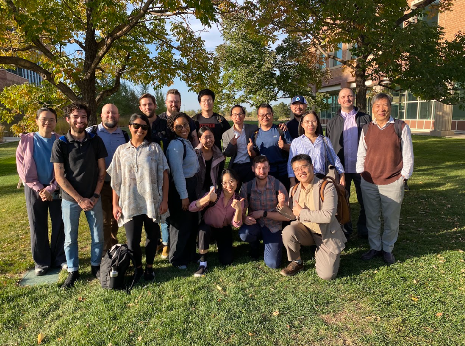
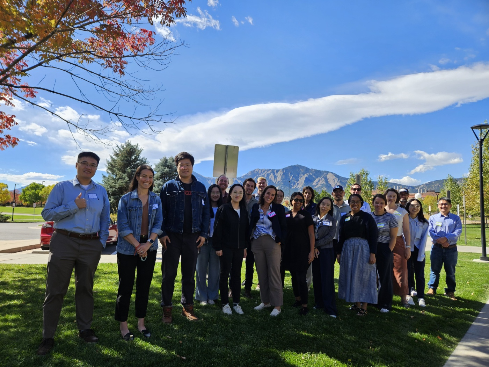

Workshop 2024
Community workshop on harmonizing natural methane datasets and Knowledge-guided AI.
Collaborative Organization
We advance understanding of global methane sources and sinks (both natural and anthropogenic) using Knowledge-guided AI.
Atmospheric methane (CH4) is the second most powerful greenhouse gas after carbon dioxide and grew at the fastest rate ever recorded in 2020–2022. Slowing or reversing the accelerating growth in atmospheric CH4 will require an improved understanding of the global CH4 budget, which is currently underconstrained.
Both natural (e.g. wetlands, soils, geologic sources) and anthropogenic (e.g. fossil fuels, agriculture, waste) CH4 sources matter for the budget—natural CH4 accounts for ~40% but remains highly uncertain. Our work on AI for CH4 aims to build a novel framework that integrates scientific knowledge and machine learning to harmonize simulated and observed datasets across natural and anthropogenic sectors, quantifying spatial and temporal changes in global methane fluxes.
— participants · — institutions · View team table
Members span field measurements, remote sensing, process modeling, atmospheric inversion, and AI, with applications from nature-based solutions to policy. Every profile is written and kept current by the member.
We work across both natural and anthropogenic methane to advance the global CH4 budget:
We bring the community together at annual workshops to advance harmonization and Knowledge-guided AI methods.

Community workshop on harmonizing natural methane datasets and Knowledge-guided AI.

Follow-up workshop building on 2024 outcomes: Knowledge-guided AI framework, data harmonization, and open tools.
Upcoming workshop at the Yale Center for Natural Carbon Capture. Details to be announced.
As an output of this network, we will generate and publicly share: